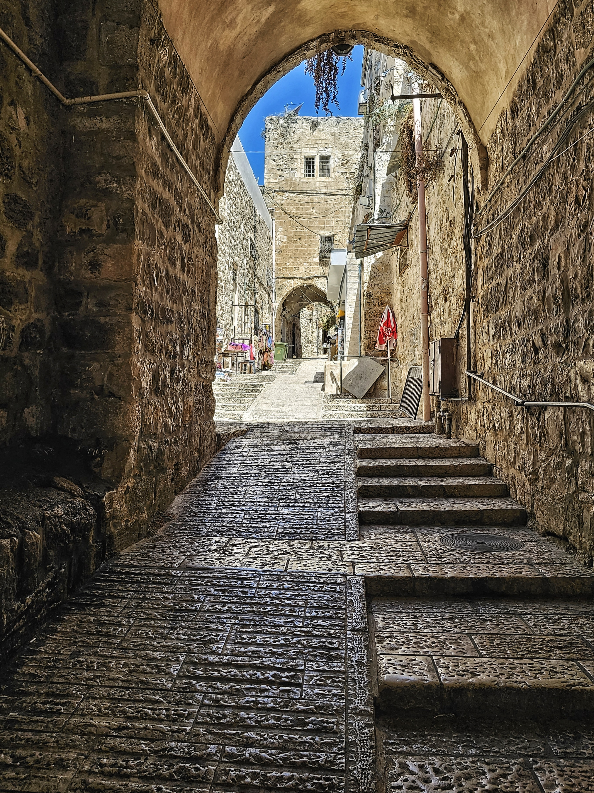
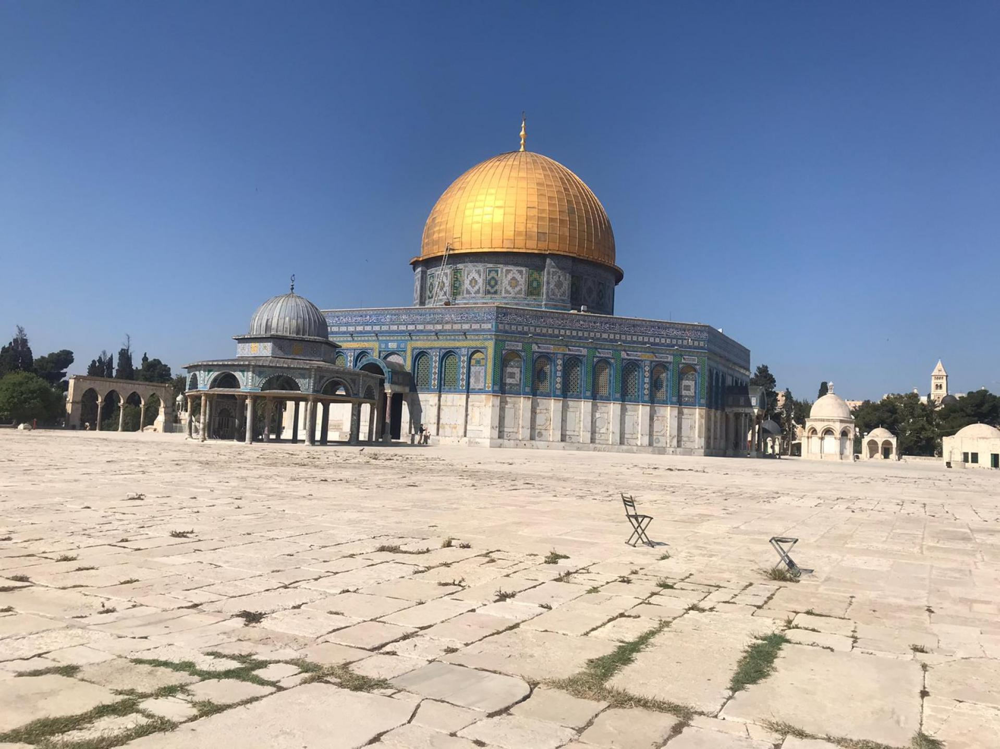
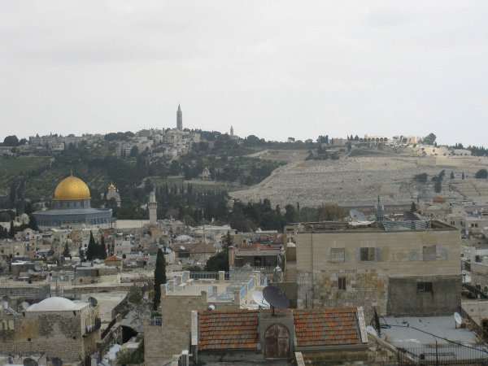

1.البلدة القديمة

تتميز البلدة القديمة باسواقها المسقوفة و حاراتها التاريخية العتيقة
مدة الزيارة المقترحة :3 ساعات كاملة
خطوات التجول داخل البلدة القديمة :
- الدخول من باب العامود و بدء الجولة.
- السير في سوق خان الزيت التاريخي .
- الوصول الى قلب الاسواق العتيقة القريبة من المسجد الاقصى .
يمكنك قراءة المزيد عنها عبر ويكيبيديا .
2.المسجد الاقصى و قبة الصخرة

يعد المسجد الاقصى اولى القبلتين و ثالث الحرمين الشريفين .
يمكنك قراءة المزيد عنها عبر ويكيبيديا.
4.جبل الزيتون (طور زيتا )

يقع شرق البلدة القديمة و يمنح الزائرين اطلالة بانورامية ساحرة تكشف كامل المدينة .
يمكنك قراءة المزيد عنها عبر ويكيبيديا.